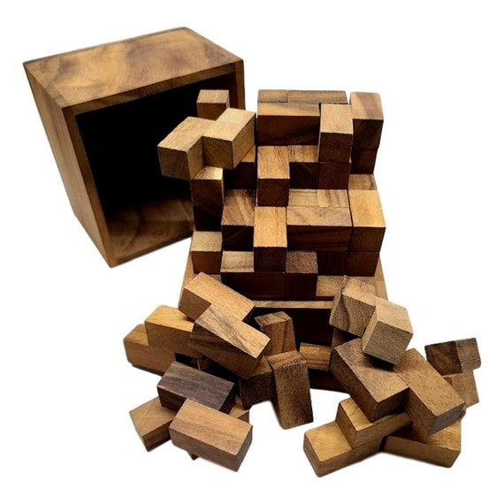
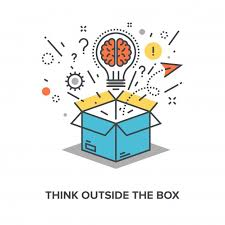

🌐El Arte de Resolver Problemas Digitales1
🛠️ “Cómo la creatividad transforma desafíos tecnológicos en soluciones innovadoras.”
🌟 Una Nueva Forma de Ver los Problemas
En la era digital, los problemas no son barreras; son oportunidades disfrazadas. 🚀
La creatividad juega un papel clave al abordar estos desafíos, permitiendo a los innovadores encontrar soluciones únicas donde otros ven obstáculos insuperables. 💡✨
🤔 ¿Cómo aplicar la creatividad en la resolución de problemas?
🔄 1. Pensamiento Lateral
Mira los problemas desde una perspectiva diferente. 👀
Ejemplo: En lugar de mejorar un proceso complejo, ¿podrías eliminarlo completamente?

🤝 2. Colaboración Interdisciplinaria
Junta mentes de distintas áreas para encontrar soluciones más completas. 🌍🧠
Ejemplo: Diseñadores trabajando con programadores pueden crear interfaces más intuitivas y amigables para el usuario.
⚡ 3. Prototipado Rápido
Experimenta con soluciones para identificar las mejores ideas rápidamente. ⏩
Ejemplo: Usa herramientas como Figma o Sketch para validar conceptos visuales antes de implementarlos.
📖 Casos reales de creatividad en acción
- 🎬 Netflix: Transformó el negocio de alquiler de DVD al anticipar la era del streaming.
- 🚗 Tesla: Reinventó el concepto de vehículos eléctricos con tecnología y diseño atractivo.
🔑 Conclusión
La próxima vez que enfrentes un desafío digital, recuerda que tienes una herramienta poderosa a tu disposición: tu creatividad. 🌟
No te limites a lo tradicional; piensa fuera de la caja 🧩 y deja que la innovación te guíe.
